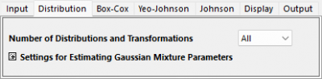
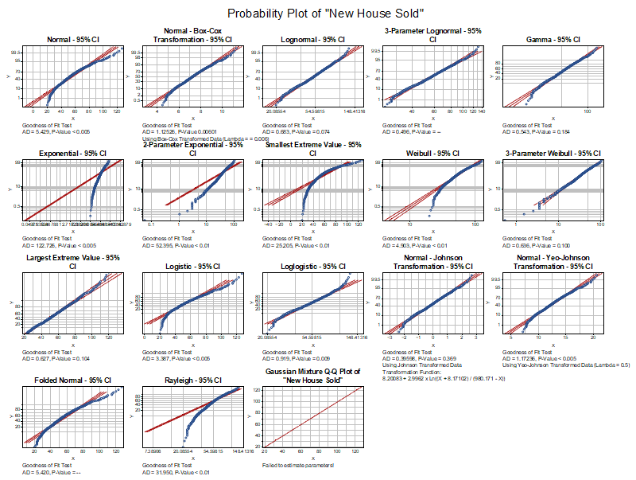

分布の識別のチュートリアル
Tutorial-IDD
始める前の注意
- ここからサンプルプロジェクトファイルをダウンロードし、Originで開きます。
 | 詳細情報:
|
ユーザストーリー
ある住宅販売業者が、周辺エリアで販売された住宅データを持っています。このデータの最適な分布を特定し、さらなる分析に活用したいと考えています。
データの分布を識別
- Originでサンプルプロジェクトファイルを開き、フォルダ3.Nonnormalをプロジェクトエクスプローラで開きます。ワークブックHouse Soldをアクティブにします。
- ワークシートのB列を選択します。Originのウィンドウ左側にあるアプリギャラリーウィンドウを開き、アイコンをクリックします。
- 分布の識別タブを選択し、分布の識別アイコンをクリックしてダイアログを開きます。
- 開いたダイアログの入力タブで、列Bが測定データとして自動的に選択されます。サブグループのサイズを定数にし、サブグループのサイズの定数を1に設定します。
-

- 入力タブで分布と変換の数を すべてにします。
-

- OKボタンをクリックします。レポートシートが作成されます。
結果の解釈
適切な分布モデルを以下の結果に基づいて選択できます。
以下の分布はデータに適していると判断できます。これらのP値は適合度検定（Goodness of Fit Test） において、P値が 0.05以上 でした。そして確率プロット上の点は基準線上に収まっているほど、適合度が高いといえます。
- Johnson変換 (0.369)
- ガンマ (0.184)
- 最大極値分布 (0.104)
- 3パラメータワイブル分布 (0.1)
- 対数正規分布 (0.074)
確率(P-P)プロット
データ点が基準線に近いほど、分布がデータに適していることを示します。

適合度検定テーブル